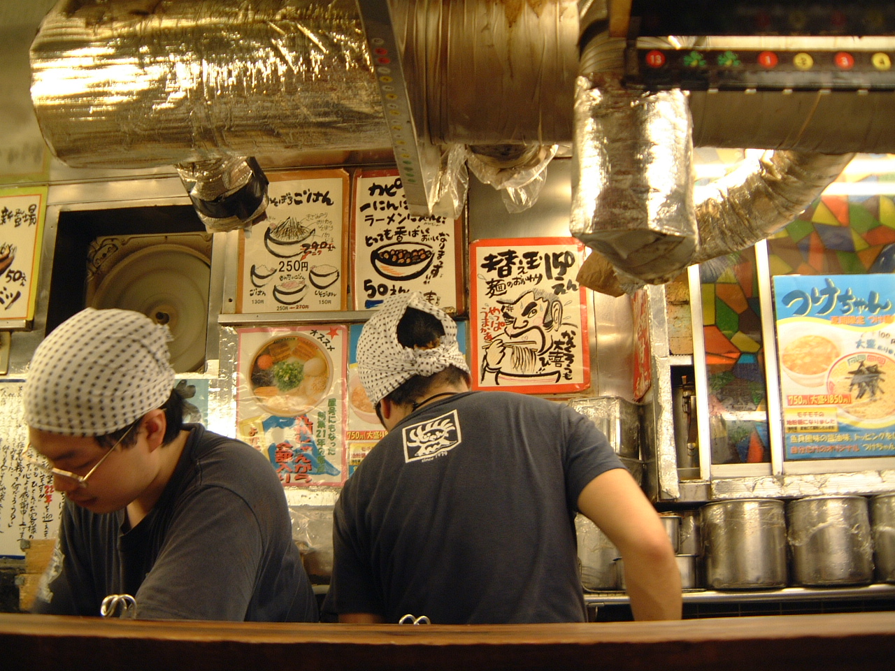
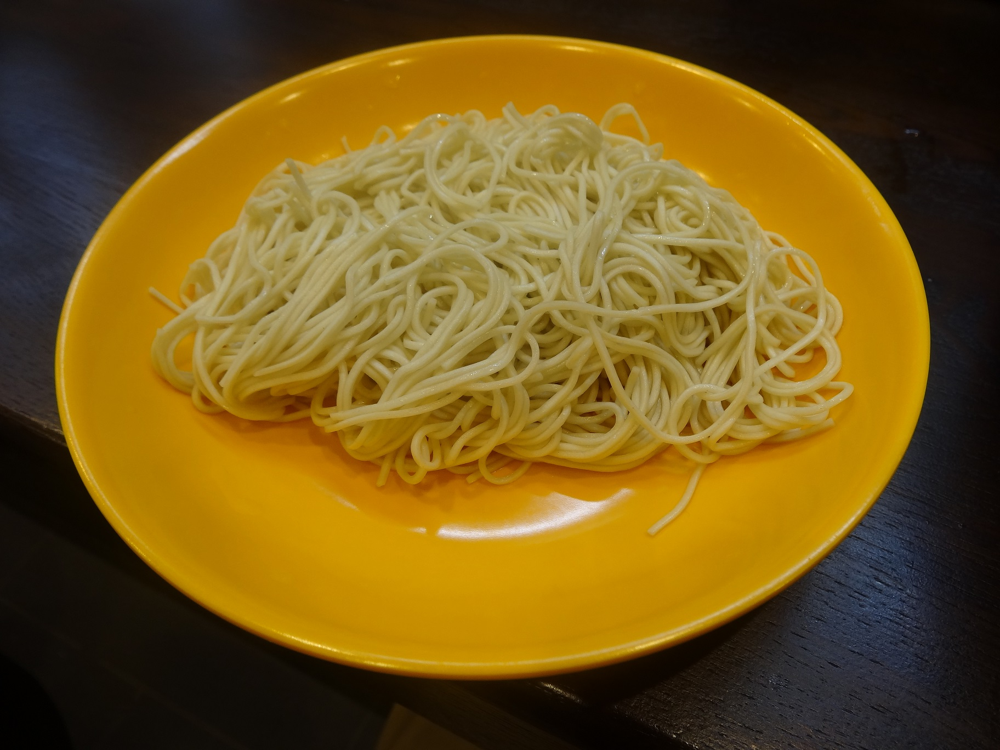

Japan with
Japan with
You find the shop. There is a queue, but nobody is speaking to a host. Inside stands a machine covered in buttons. A paper ticket appears. Minutes later you are sitting shoulder to shoulder at a counter, facing an open kitchen, while a bowl built to order lands directly in front of you.
For a first-time visitor, a Japanese ramen shop can feel less like a restaurant than a compact operating system. The surprise is not one strange rule. It is how several small routines connect: prepayment, a narrow menu, counter seating, rapid cooking, personal noodle settings, tabletop seasonings and a short stay.
First surprise: the machine may be your server
The Japan National Tourism Organization tells travelers that many ramen shops use a meal-ticket machine: insert payment, choose ramen, toppings, sides or a drink, collect the ticket and change, then give the ticket to staff. “Many” matters. Some shops take orders at the table or counter; chains increasingly use multilingual touchscreens and cashless payment. The machine is common, not universal.

The machine does more than save a conversation. Payment is settled before cooking, tickets preserve the order, and a small staff can focus on bowls. For the visitor, the decision arrives early—sometimes before there is time to translate every button. Look for photos, a language control or the shop’s recommendation. If people are waiting, step aside until ready rather than blocking the controls.
The counter is not an inferior table
Counter seating makes solo dining ordinary. It also shortens the distance between cook, bowl and customer. A chef can watch several noodle timers, lift portions from boiling water, add soup and toppings, then serve across a few feet of counter. The guest sees work usually hidden behind a restaurant door.

This helps explain the tempo. Noodles continue absorbing liquid after they enter soup. Aroma escapes, fat cools and texture changes. The shop’s rhythm protects a perishable moment. It does not mean conversation is forbidden, nor that every bowl must be eaten at competitive speed. JNTO’s guidance is simpler: chatting is acceptable, but ramen shops are generally not places to linger after finishing—especially when people are waiting.
Your noodle texture may have a vocabulary
In Hakata-style tonkotsu shops, staff may ask how firm you want the thin noodles. Common answers include futsū (regular), kata or katame (firm), and barikata (very firm). Some shops advertise more extreme terms such as harigane (“wire”) or kona-otoshi (“dusting off the flour”). These are vivid subcultural labels, not a national ramen scale. A Sapporo miso shop or Tokyo shoyu counter may offer no firmness choice.
If unsure, regular is a real answer—not a failure of courage. Very undercooked noodles are not automatically the shop’s ideal, and terminology differs. Follow the choices actually offered instead of importing a code from social media.
Kaedama turns one soup into a second act
Hakata ramen’s most ingenious participation is kaedama: an extra portion of noodles added to the soup already in your bowl. Japan’s agriculture ministry describes Hakata noodles as thin and relatively small in portion, and traces the refill custom to Nagahama ramen culture, where fast-cooking noodles suited workers around the fish market. The ministry also notes that the precise origin has competing accounts.

Timing matters. Order while enough hot soup remains; a dry bowl cannot support the refill. You may be asked for firmness again. Shops often provide concentrated sauce because the first noodles and toppings dilute the seasoning. Kaedama is common in particular tonkotsu traditions, not an entitlement at every ramen shop.
The condiments are an invitation—but not all at once
Pepper, sesame, garlic, vinegar, chili oil, pickled ginger or spicy mustard greens may sit within reach. The exact set tells you something about the bowl. At a Hakata counter, red ginger can cut through rich pork broth; sesame adds aroma; sauce restores intensity after kaedama. Elsewhere, vinegar may sharpen dipping sauce or change the final third of a bowl.
Taste first. Then change one variable at a time. This is practical, not ceremonial: once a large spoonful of garlic or vinegar enters, the original balance cannot be recovered. Use the provided serving spoon rather than personal chopsticks in shared jars.
Slurping is permitted, not compulsory
JNTO states that slurping noodles is not considered rude in Japan. It can help move long noodles toward the mouth, but visitors do not have to perform noise. Eat in the way that is comfortable and controlled. Likewise, drinking all the soup is optional. Ramen broth can be rich and salty; leaving soup does not mean you rejected the meal.
Other supposed laws are softer than internet lists suggest. Returning the bowl to a raised counter or wiping your place is appreciated in some shops and awkward in others. Copy a posted instruction, not a stranger’s universal claim. Saying gochisōsama deshita—“thank you for the meal”—is warm but never an entrance exam.
What can go wrong—and how to recover
| Moment | Low-stress response |
|---|---|
| You cannot read the machine | Use the language button or photos; ask “osusume wa?” for the recommendation. |
| You bought the wrong ticket | Show staff immediately. Do not buy extra tickets to “fix” it. |
| Your group wants adjacent seats | Expect a wait or separate seats; a tiny counter cannot always hold places. |
| You have allergies | Do not infer ingredients from appearance. Broth and tare may contain pork, fish, shellfish, wheat, soy or egg; confirm before purchase. |
| You feel rushed | Eat normally, but move bags out of the aisle and leave after finishing when a queue exists. |
Accessibility varies sharply. Older counters can be narrow, raised or step-only; machines may be difficult from a seated position; partitions may complicate communication. Families, wheelchairs and large luggage are better served by checking photos and official information first. A famous queue is not proof that a shop fits every body or trip.
The culture is coordination, not obedience
Japanese ramen became regionally diverse because shops kept solving local problems: available ingredients, workers’ schedules, preferred noodle textures and limited space. The modern counter inherits that inventiveness. It invites the guest to make small decisions while the kitchen controls heat, timing and repetition.
That is why the experience can feel intimate even when few words are exchanged. You watch the bowl being assembled; the cook receives your texture choice; you decide when to alter the flavor or ask for another portion. Efficiency does not remove individuality. It creates a narrow stage on which both sides know what must happen next.
Learn katame (firm), kaedama (noodle refill), ninniku (garlic) and osusume (recommendation) at Japanese Training Lab—free web practice with no signup. Then watch Yuji walk real Japanese streets on TikTok LIVE; DraMap, created by Yuji, lets iPhone users learn Japanese while playing.
Reporting sources
- Japan National Tourism Organization — Ramen guide.
- JNTO — A Guide to Ramen in Japan.
- Ministry of Agriculture, Forestry and Fisheries — Regional meat ramen.
- MAFF — The changing story of ramen.
- ICHIRAN — Official FAQ.
- JNTO — Solo dining in Japan.
Sources, links and operating guidance checked November 12, 2026. Practices vary by shop, region and ramen style; current posted instructions take priority. The system framework is Japan Unfolded’s editorial interpretation.

Find the counter behind the curtain.
Yuji edits Japan Unfolded and created DraMap. Watch everyday Japan LIVE, then learn the words while playing.
Japan Unfolded is independently edited by Yuji Shimizu, creator of DraMap. The app link is publisher promotion; recommendations and interpretations are editorial judgments based on the cited sources.